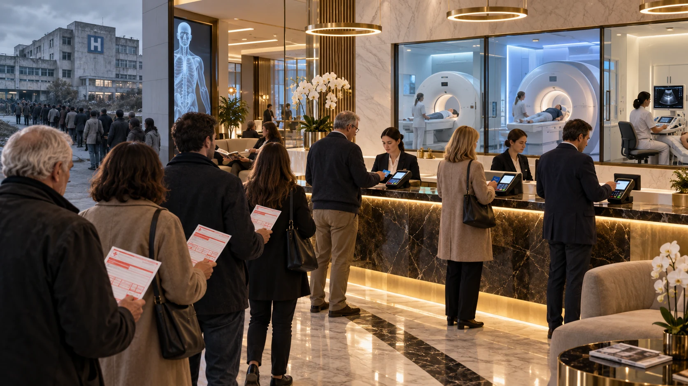

Liste d’attesa, ricette che scadono, solvenza che cresce e milioni di prestazioni che il Servizio Sanitario non eroga. Non è più soltanto una questione di tempi. È un modello che cambia il comportamento dei cittadini e sposta una parte del costo della salute sulle famiglie.
In questo dossier
- LA TESTIMONIANZA
- LA MALASANITÀ PIÙ DIFFUSA NON FA RUMORE
- 38 MILIONI DI PRESCRIZIONI. E OLTRE 16 MILIONI CHE NON ARRIVANO ALLA PRESTAZIONE
- DOVE FINISCONO I PAZIENTI?
- IL TEMPO DELLA DIAGNOSI È PARTE DELLA CURA
- IL PRIVATO NON NASCE CON IL COVID. MA DOPO IL COVID CAMBIA TUTTO
- DAL 2022 IL RAPPORTO È STABILE: PIÙ DELLA METÀ DELLA SPECIALISTICA È EROGATA DA STRUTTURE PRIVATE
- LA CAPACITÀ NON È LA STESSA COSA DEL BUDGET
- IL PARADOSSO DEL PERCORSO DI TUTELA
- I BUDGET: IL PRIVATO NON È PIÙ MARGINALE
- E QUANDO NON BASTA, LA REGIONE COMPRA ANCORA
- NEL FRATTEMPO LA SOLVENZA CRESCE
- NON È SOLO UNA SENSAZIONE: I BILANCI DEI GRANDI OPERATORI RACCONTANO LO STESSO MERCATO
- IL CANALE AGEVOLATO: QUANDO IL PRIVATO DIVENTA QUASI UN TICKET
- ANCHE IL PUBBLICO HA IL SUO PRIVATO: L’INTRAMOENIA
- STANNO CREANDO UN’ABITUDINE
- IL VERO CONTO: COSA CI GUADAGNA IL SERVIZIO SANITARIO?
- GLI OSPEDALI DI COMUNITÀ NON SOSTITUISCONO I GRANDI OSPEDALI
- MA ALLORA PERCHÉ NON POTENZIARE IL PUBBLICO?
- IL PARADOSSO LOMBARDO
- IL CASO RASETTI, ALLA FINE, È SOLO UN CONTICINO
- LA DOMANDA CHE RESTA
- Fonti documentali
LA TESTIMONIANZA
RASETTI PAOLO, 56 ANNI, BRIANZA -
«Ho un problema reale ai testicoli. Non so ancora che cosa sia e devo fare due esami: un ecocolordoppler e un’ecografia.
Abito a Carate Brianza. Con il Servizio Sanitario sono riuscito a prenotare, ma ho trovato posto a Bregnano. Un esame a gennaio e l’altro a febbraio.
Il ticket complessivo è di 72 euro.
Per farli devo andare in macchina due volte. Forse tre, se per i referti dovrò tornare di persona. Quindi ai 72 euro devo aggiungere benzina, tempo, chilometri e magari ore di lavoro perse.
Ma la cosa che pesa di più non è nemmeno quella. Io ho un problema adesso. Fino a gennaio e febbraio dovrei convivere con questo problema senza sapere che cosa ho.
A Verano Brianza, privatamente, posso fare gli stessi accertamenti in circa dieci giorni per 120 euro.
La differenza nominale è di 48 euro.
A quel punto io non sto più scegliendo tra sanità pubblica e sanità privata. Sto scegliendo tra aspettare mesi e sapere prima che cosa ho.»
Quello di Rasetti Paolo non è un caso isolato.
Sono centinaia.
Anzi, no.
Sono milioni.
LA MALASANITÀ PIÙ DIFFUSA NON FA RUMORE
Quando si parla di malasanità, l’immagine immediata è l’errore eccezionale: una garza dimenticata, un intervento sbagliato, una diagnosi clamorosamente mancata.
Ma la forma più diffusa è più silenziosa. Comincia quando il medico riconosce un bisogno, prescrive una visita o un esame e il Servizio sanitario nazionale (SSN) non offre al cittadino un posto in tempo utile.
Nella specialistica e nella diagnostica la prescrizione è la porta d’ingresso. Se milioni di ricette non diventano prestazioni, non siamo davanti a una somma di disguidi. Siamo davanti a un diritto riconosciuto sulla carta e negato nell’accesso.
Chi può pagare compra tempo diagnostico. Chi non può pagare aspetta, rinuncia o assume il rischio clinico dell’attesa. È questa la malasanità che stiamo denunciando.
38 MILIONI DI PRESCRIZIONI. E OLTRE 16 MILIONI CHE NON ARRIVANO ALLA PRESTAZIONE
Regione Lombardia monitora le prescrizioni per visite specialistiche e diagnostica su un arco temporale mobile. Nel periodo febbraio 2025-gennaio 2026 risultano 38.047.699 prescrizioni complessive.
Le prestazioni erogate sono 18.961.670.
Quelle prenotate ma non ancora eseguite sono 2.806.936.
Poi c’è il blocco più difficile da ignorare: oltre 16 milioni di prescrizioni che, nel quadro monitorato, non risultano né prenotate né erogate.
Non sono ricette rimaste lì ad accumularsi dal Covid. Le prescrizioni hanno una validità, scadono e il monitoraggio si rinnova. Questo significa che stiamo osservando un flusso attuale: nuove prescrizioni entrano, una parte viene eseguita, una parte viene prenotata, e una parte enorme esce dal ciclo senza risultare trasformata in prestazione.
La ricetta scade. Il problema del paziente no.
Dentro quel blocco ci sono anche prescrizioni con priorità U e B. Dai dati regionali emergono circa 232 mila prescrizioni urgenti e circa 1,014 milioni brevi che non risultano né prenotate né erogate nel ciclo osservato.
Una prescrizione non equivale automaticamente a una persona e non possiamo sostenere che tutti questi pazienti siano rimasti senza cura. Ma proprio qui nasce la domanda che ci interessa: se la prestazione non è stata erogata dal Servizio Sanitario, dove è finito quel bisogno?
DOVE FINISCONO I PAZIENTI?
Il Centro Studi Investimenti Sociali (Censis) ha misurato il comportamento che le statistiche sulle ricette non riescono a vedere fino in fondo: su 100 tentativi di prenotare una prestazione nel Servizio Sanitario, 34,9 finiscono poi nella sanità a pagamento, tra intramoenia e privato puro.
Non è quindi una semplice impressione del cittadino che non trova posto e decide di pagare. È un comportamento osservato su larga scala.
L’Istituto nazionale di statistica (ISTAT) fotografa la stessa dinamica da un’altra angolazione. Nel 2024 il 23,9 per cento delle persone ha sostenuto interamente il costo dell’ultima prestazione specialistica, contro il 19,9 per cento del 2023. Nello stesso anno il 6,8 per cento della popolazione dichiara di aver rinunciato a visite o accertamenti per le lunghe liste d’attesa. Era il 4,5 per cento nel 2023 e il 2,8 per cento nel 2019.
Quando il Servizio Sanitario non dà una risposta, il paziente non scompare. Cambia canale, paga, aspetta oppure rinuncia.
IL TEMPO DELLA DIAGNOSI È PARTE DELLA CURA
Un esame rinviato non è soltanto un appuntamento spostato. Nelle patologie tempo-dipendenti il ritardo può consentire alla malattia di progredire, ridurre le possibilità terapeutiche e rendere necessarie cure più invasive.
L’Organizzazione mondiale della sanità (OMS) indica nella diagnosi precoce uno strumento capace di ridurre la mortalità oncologica. Quando il tumore viene scoperto in uno stadio più avanzato, diminuisce la sopravvivenza e aumentano la morbilità e i costi delle cure.
Una revisione sistematica pubblicata dal BMJ su 34 studi e 1.272.681 pazienti ha inoltre rilevato che, in numerose indicazioni oncologiche, ogni quattro settimane di ritardo nell’inizio del trattamento si associano a un aumento della mortalità.
Quello studio misura il tempo tra diagnosi e cura, non il destino delle singole prescrizioni lombarde. Ma dimostra che il tempo sanitario non è neutro. Non possiamo trasformare i 16 milioni di prescrizioni in un conteggio di aggravamenti o decessi; non possiamo nemmeno fingere che ritardare una diagnosi sia privo di conseguenze.
Quando il canale pubblico impedisce una diagnosi tempestiva, non trasferisce alle famiglie soltanto una spesa. Trasferisce anche il rischio clinico dell’attesa.
IL PRIVATO NON NASCE CON IL COVID. MA DOPO IL COVID CAMBIA TUTTO
Il privato accreditato esiste da decenni. Questa non è la storia della nascita della sanità privata in Lombardia.
La nostra pista parte molto più tardi.
Nel 2020 il Covid blocca o rinvia una quantità enorme di attività programmata. Nel 2021 iniziano i piani di recupero delle liste d’attesa. L’Agenzia di tutela della salute (ATS) di Milano pubblica una manifestazione di interesse rivolta agli enti privati accreditati già a contratto.
Nel 2022 il meccanismo si allarga: nelle procedure compaiono anche soggetti privati accreditati non già a contratto. È un passaggio fondamentale, perché significa che quando la capacità ordinaria non basta il sistema va a cercare altra capacità privata e la compra.
L’emergenza Covid però passa. Il meccanismo resta.
Negli anni successivi continuano manifestazioni di interesse, addendum, contratti e risorse aggiuntive finalizzate al recupero delle liste. Nel 2025-2026 il ricorso al privato accreditato per aumentare l’offerta non è più una parentesi eccezionale: è parte dell’ordinaria gestione delle attese.
Il Covid non ha creato il privato. Ha trasformato il privato in una risposta strutturale alle insufficienze del canale pubblico.
DAL 2022 IL RAPPORTO È STABILE: PIÙ DELLA METÀ DELLA SPECIALISTICA È EROGATA DA STRUTTURE PRIVATE
Il dataset ufficiale di Regione Lombardia sulla specialistica per erogatore consente di vedere il peso del privato nel sistema. Dal 2022 al 2025 la quota delle prestazioni erogate da strutture classificate come private resta praticamente inchiodata poco sopra il 52 per cento.
Scorri orizzontalmente per vedere tutte le colonne.
| Anno | Prestazioni private | Prestazioni pubbliche | Quota privata |
|---|---|---|---|
| 2022 | 76.371.242 | 69.582.304 | 52,3% |
| 2023 | 79.220.512 | 71.435.678 | 52,6% |
| 2024 | 81.375.692 | 74.353.414 | 52,3% |
| 2025 | 80.496.160 | 73.216.499 | 52,4% |
Questo dato va letto correttamente: non significa che oltre metà delle prestazioni sia pagata privatamente dai cittadini. Significa che oltre metà delle prestazioni presenti nel dataset regionale viene materialmente erogata da strutture private, molte delle quali accreditate e integrate nella rete del Servizio Sanitario.
Ed è proprio questa doppia natura a rendere il sistema particolare. La stessa struttura può lavorare per il Servizio Sanitario e, nello stesso tempo, vendere prestazioni in solvenza, tramite assicurazioni o attraverso formule agevolate.
Per il cittadino la struttura è spesso percepita come un ospedale del sistema: stessa ricetta, stesso ticket, stessa rete di prenotazione. Poi, quando il posto con il Servizio Sanitario non c’è, compare l’altro canale.
LA CAPACITÀ NON È LA STESSA COSA DEL BUDGET
Qui bisogna fermarsi su un meccanismo che spiega molte delle contraddizioni osservate.
Una struttura privata accreditata può avere una capacità fisica superiore a quella che il Servizio sanitario regionale (SSR) le compra. Può avere macchine, personale, ambulatori e ore disponibili. Ma il contratto pubblico remunera soltanto un determinato volume.
Quando quel volume si esaurisce, la capacità fisica non scompare. Può continuare a essere utilizzata in altri canali.
Per questo può succedere che la risposta sia: «con il Servizio Sanitario non c’è disponibilità», mentre pagando la stessa prestazione venga proposta in tempi molto più brevi.
Non sempre manca la prestazione. A volte manca la prestazione comprata dal Servizio Sanitario.
IL PARADOSSO DEL PERCORSO DI TUTELA
Per le prestazioni specialistiche ambulatoriali di primo accesso esiste un percorso di tutela. Se la struttura non può rispettare il tempo indicato dalla classe di priorità della ricetta, il cittadino può rivolgersi al Responsabile unico aziendale per i tempi d’attesa (RUA) o all’Ufficio relazioni con il pubblico (URP).
La struttura pubblica o privata accreditata deve cercare un’altra disponibilità nel territorio dell’Agenzia di tutela della salute di riferimento. Se non la trova, deve inserire il cittadino in una lista dedicata. Se nemmeno questo consente di rispettare il tempo previsto, la prestazione deve essere erogata in libera professione con costi a carico della struttura e con il solo eventuale ticket a carico del cittadino.
Detta così sembra una tutela piena. Nella pratica contiene un paradosso: può bastare trovare un appuntamento lontano perché il sistema consideri assolto il proprio dovere. Regione Lombardia avverte inoltre che chi rifiuta la proposta per preferenze personali o motivi logistici perde il diritto al mantenimento della classe di priorità.
Rasetti Paolo vive a Carate Brianza e ha trovato posto a Bregnano. Sotto casa la stessa prestazione è disponibile a pagamento. La tutela può quindi garantire un appuntamento, ma non necessariamente la prossimità della cura. La capacità vicina esiste; manca la quota acquistata dal Servizio sanitario regionale.
C’è un altro passaggio decisivo. Se il cittadino, preoccupato, prenota autonomamente nel privato o in libera professione, non può poi pretendere il rimborso. Il percorso deve essere attivato prima di pagare. Il diritto esiste, ma funziona soltanto per chi lo conosce e riesce a farlo valere prima che l’urgenza personale lo spinga verso il pagamento diretto.
I BUDGET: IL PRIVATO NON È PIÙ MARGINALE
Le fotografie territoriali raccolte durante l’indagine mostrano quanto il privato accreditato sia ormai integrato nella specialistica lombarda.
Nell’ATS Milano, per il 2025, i budget discussi per la specialistica ambulatoriale sono nell’ordine di 568,5 milioni di euro al pubblico e 388,75 milioni al privato accreditato: circa il 40,6 per cento al privato.
In ATS Brianza, sempre nel 2025, circa 193,3 milioni al pubblico e 79,28 milioni al privato: circa il 29,1 per cento.
In ATS Val Padana circa 151 milioni al pubblico e 60,08 milioni al privato: circa il 28,5 per cento.
Per Brescia, nei dati discussi per il 2026, circa 219 milioni al pubblico e 123,4 milioni al privato: intorno al 36 per cento.
Gli anni non sono tutti identici e quindi questi valori non vanno sommati in una falsa percentuale regionale unica. Ma la fotografia è sufficiente per una conclusione: il privato accreditato non è un’appendice del sistema. È una colonna della capacità specialistica finanziata dal Servizio Sanitario Regionale.
E QUANDO NON BASTA, LA REGIONE COMPRA ANCORA
Il punto più interessante non è nemmeno la quota ordinaria già a contratto.
Quando le liste d’attesa non rientrano, la Regione e le ATS pubblicano manifestazioni di interesse per acquistare altre prestazioni. Bergamo, Insubria, Pavia, Montagna, Milano: negli anni post-Covid il meccanismo ricorre in territori diversi.
In alcuni documenti compare anche la possibilità di coinvolgere soggetti accreditati non già contrattualizzati. La capacità privata esiste, il Servizio Sanitario la compra quando ne ha bisogno e quella capacità entra nel circuito pubblico.
Regione Lombardia ha inoltre indicato per il 2025 circa 70 milioni di euro di finanziamenti aggiuntivi a erogatori pubblici e privati per aumentare l’offerta e ridurre le attese.
NEL FRATTEMPO LA SOLVENZA CRESCE
La seconda metà del meccanismo è il pagamento diretto.
Nell’area milanese, tra 2019 e 2023, le visite erogate nel Servizio Sanitario restano sotto i livelli pre-Covid: -9 per cento nel pubblico e -12,2 per cento nel privato accreditato.
Nello stesso periodo la solvenza cresce: +12,7 per cento nelle strutture pubbliche e +27 per cento nel privato.
Questo confronto non consente di seguire il singolo paziente dalla ricetta al pagamento. Ma documenta due fenomeni contemporanei: il canale SSN non recupera completamente e il canale a pagamento aumenta.
Poi arrivano Censis e ISTAT e mostrano che una quota importante dei cittadini, quando il Servizio Sanitario non risponde in tempo, paga davvero.
NON È SOLO UNA SENSAZIONE: I BILANCI DEI GRANDI OPERATORI RACCONTANO LO STESSO MERCATO
Abbiamo guardato anche i bilanci di più operatori, proprio per non trasformare questa inchiesta in un attacco a una singola clinica.
Negli Istituti Clinici Zucchi, nei dati discussi per il 2024, l’attività ambulatoriale SSR/convenzionata è nell’ordine di 13,34 milioni di euro, mentre il privato/solvenza è nell’ordine di 11,50 milioni. La solvenza cresce rispetto all’anno precedente.
Al San Raffaele, nei dati 2024 analizzati, l’ambulatoriale solvente è nell’ordine di 89,98 milioni di euro, superiore al totale ambulatoriale SSN considerato nella nostra ricostruzione. La crescita della componente solvente è risultata più rapida della crescita del canale SSN lombardo.
Humanitas presenta una componente privata complessiva molto rilevante, pur non essendo possibile confrontarla direttamente con il solo ambulatoriale SSN perché le categorie di bilancio non sono perfettamente omogenee.
Nel Policlinico di Monza la relazione di bilancio analizzata lega la crescita anche alla saturazione del budget e alla crescita della solvenza.
MultiMedica mostra a sua volta quanto il rapporto tra produzione e budget venga continuamente riallineato attraverso la programmazione regionale.
Non serve trasformare questi numeri in una classifica. Il punto è un altro: il mercato a pagamento non vive fuori dal sistema. Vive accanto al Servizio Sanitario, spesso dentro gli stessi grandi operatori che il Servizio Sanitario finanzia.

IL CANALE AGEVOLATO: QUANDO IL PRIVATO DIVENTA QUASI UN TICKET
Alcune strutture non hanno soltanto due porte - Servizio Sanitario o privato - ma più livelli: SSN, assicurazione, solvente ordinario, solvente agevolato.
Il canale agevolato riduce ulteriormente la distanza psicologica ed economica tra ticket e pagamento diretto. Se il cittadino deve comunque spendere 36 o 72 euro di ticket, viaggiare, aspettare mesi e perdere tempo, una prestazione privata proposta a un prezzo relativamente vicino può diventare la scelta più logica.
È esattamente quello che succede nel caso di Rasetti Paolo: 72 euro nel Servizio Sanitario contro circa 120 nel privato. La differenza nominale è 48 euro, prima ancora di contare benzina, tempo e attesa.
ANCHE IL PUBBLICO HA IL SUO PRIVATO: L’INTRAMOENIA
Il fenomeno non riguarda soltanto le cliniche private accreditate.
Nelle strutture pubbliche esiste l’attività libero-professionale intramuraria (ALPI): il medico del Servizio Sanitario può svolgere prestazioni private utilizzando strutture e attrezzature pubbliche, in regime separato dall’attività istituzionale.
Per il cittadino il paradosso può essere ancora più evidente: stesso ospedale, stessa macchina, spesso lo stesso professionista. Cambia il canale e cambia il tempo.
Proprio per questo negli anni sono stati attivati controlli sulla gestione delle agende e sul rapporto tra attività istituzionale e attività libero-professionale.
Nella fase di ricerca sono emersi rilievi su squilibri tra prenotazioni SSN e ALPI e sulla gestione non uniforme delle agende. Un’indagine dell’Organismo regionale per le attività di controllo (ORAC) precedente aveva già indicato liste d’attesa e libera professione come area vulnerabile a comportamenti opportunistici.
STANNO CREANDO UN’ABITUDINE
Questo è il punto che rischia di sfuggire se ci limitiamo a contare le prestazioni.
La prima volta il cittadino prova il Servizio Sanitario.
Non trova posto vicino. Allarga il raggio. Accetta un’altra provincia. Aspetta. Paga comunque il ticket.
Poi scopre che pagando direttamente può avere la prestazione in pochi giorni.
La seconda volta parte già sapendo come funziona.
La terza volta può non cercare nemmeno nel pubblico.
A quel punto il Servizio Sanitario non ha soltanto perso una prestazione. Ha perso un paziente.
La lista d’attesa non sposta soltanto una prestazione. Può spostare definitivamente un paziente.
Ed è un meccanismo auto-rinforzante. Più cittadini escono dal circuito pubblico, più il privato cresce. Più il privato cresce, più appare indispensabile. Più appare indispensabile, più diventa naturale comprarne altra capacità per coprire le carenze del Servizio Sanitario.
IL VERO CONTO: COSA CI GUADAGNA IL SERVIZIO SANITARIO?
A questo punto la domanda economica è inevitabile.
Se Rasetti Paolo rinuncia agli appuntamenti di gennaio e febbraio e paga 120 euro privatamente, il Servizio Sanitario non eroga quelle due prestazioni.
Non incassa i 72 euro di ticket. Ma non paga nemmeno la parte restante del costo sanitario. Quella spesa viene trasferita integralmente sul cittadino.
Il ticket, infatti, non è il prezzo della prestazione. È soltanto una compartecipazione.
Quando il cittadino paga tutto privatamente, non sta soltanto comprando tempo. Sta finanziando da solo un bisogno sanitario che era nato dentro il percorso del Servizio Sanitario.
Dal punto di vista del bilancio pubblico, quella prestazione esce dai costi del sistema.
E qui il meccanismo si completa: da una parte il cittadino che paga da solo alleggerisce il carico economico e operativo del Servizio Sanitario. Dall’altra, quando il sistema deve mostrare più offerta, può comprare prestazioni dal privato accreditato già organizzato.
Il cittadino paga da solo quando non vuole aspettare. La Regione paga il privato quando vuole aumentare l’offerta. In entrambi i casi il pubblico evita di dover produrre tutta quella capacità direttamente.
GLI OSPEDALI DI COMUNITÀ NON SOSTITUISCONO I GRANDI OSPEDALI
Il Piano nazionale di ripresa e resilienza (PNRR) finanzia una nuova rete territoriale. Nel monitoraggio regionale risultano 64 progetti lombardi per gli Ospedali di Comunità.
La loro funzione ufficiale è l’assistenza intermedia: ricoveri brevi e interventi a bassa intensità clinica per persone che non possono essere assistite adeguatamente a domicilio, ma non hanno bisogno di un ricovero ospedaliero per acuti.
Sono presìdi utili, ma non sostituiscono i grandi ospedali, la diagnostica specialistica, le apparecchiature complesse e gli ambulatori necessari a trasformare una prescrizione in una diagnosi. Un edificio sanitario vicino non equivale automaticamente alla disponibilità dell’esame prescritto.
Il paradosso è questo: il sistema costruisce una rete di prossimità per l’assistenza a bassa intensità, mentre una parte della capacità diagnostica richiesta dai cittadini resta accessibile più rapidamente nel circuito privato a pagamento.
MA ALLORA PERCHÉ NON POTENZIARE IL PUBBLICO?
Questa è la domanda che resta sul tavolo.
La Lombardia dispone di una rete sanitaria enorme, di centinaia di grandi apparecchiature diagnostiche e di decine di migliaia di specialisti attivi tra pubblico e privato.
Il problema non può quindi essere ridotto alla frase «non ci sono medici» o «non ci sono macchine».
Il punto è come vengono finanziate, organizzate e rese disponibili quelle risorse nel canale del Servizio Sanitario.
Se una parte crescente della capacità necessaria viene comprata fuori dalle strutture direttamente pubbliche, mentre contemporaneamente il cittadino viene abituato a pagare per accorciare i tempi, la domanda non è più soltanto sanitaria.
È una domanda di politica industriale della sanità.
IL PARADOSSO LOMBARDO
Il privato accreditato viene presentato come parte integrante della rete regionale. Per il cittadino, spesso, lo è davvero.
Poi però quella stessa struttura può vendere prestazioni fuori dal Servizio Sanitario.
Quindi può accadere questo:
- il cittadino arriva con una prescrizione;
- il posto con il Servizio Sanitario non è disponibile o è troppo lontano nel tempo;
- la stessa rete dispone di capacità privata;
- il cittadino paga;
- il Servizio Sanitario non sostiene il costo di quella prestazione;
- quando le liste diventano politicamente ingestibili, la Regione compra altra capacità dagli stessi operatori privati.
Non serve ipotizzare un complotto. Il meccanismo può funzionare perfettamente anche senza che nessuno telefoni a nessuno.
Basta che gli incentivi economici e organizzativi vadano tutti nella stessa direzione.
IL CASO RASETTI, ALLA FINE, È SOLO UN CONTICINO
72 euro di ticket.
Due viaggi da Carate Brianza a Bregnano.
Un esame a gennaio.
L’altro a febbraio.
Forse un altro viaggio per i referti.
E settimane di attesa con un problema reale ai testicoli senza sapere ancora che cosa sia.
Oppure 120 euro, pochi chilometri da casa e una risposta in circa dieci giorni.
Non serve essere economisti per capire quale scelta diventa più probabile.
E quando quella scelta viene fatta da migliaia o milioni di cittadini, non è più una scelta individuale.
Diventa un trasferimento di domanda.
Diventa un trasferimento di spesa.
Diventa un’abitudine.
LA DOMANDA CHE RESTA
Regione Lombardia continua a investire risorse per ridurre le liste d’attesa. Compra prestazioni, amplia agende, coinvolge pubblico e privato, introduce strumenti di monitoraggio.
Ma dopo aver seguito i soldi, i contratti, i volumi, le ricette scadute e il comportamento dei cittadini, la domanda cambia.
Perché continuare a comprare capacità privata e lasciare che una parte della domanda venga pagata direttamente dalle famiglie, invece di ricostruire nel pubblico la capacità necessaria a rispondere prima?
Noi non diamo la risposta.
Abbiamo tolto i fili.
Adesso i numeri sono sul tavolo.
FONTI DOCUMENTALI
- Regione Lombardia - Monitoraggio azioni per il miglioramento delle liste di attesa; prescrizioni dematerializzate (DEM) del Sistema Informativo Socio Sanitario (SISS), periodo febbraio 2025-gennaio 2026.
- Regione Lombardia Open Data - Dataset “Specialistica per Erogatore”, anni 2022-2025.
- ATS Milano Città Metropolitana - Manifestazioni di interesse e accordi per il recupero delle liste di attesa, anni 2021, 2022, 2024, 2025 e 2026.
- ATS Brianza - Contratti e budget della specialistica ambulatoriale, 2025.
- ATS Val Padana - Budget e volumi della specialistica ambulatoriale, 2025.
- ATS Brescia - Programmazione e budget della specialistica ambulatoriale/diagnostica, 2026.
- ATS Bergamo, ATS Insubria, ATS Pavia, ATS Montagna - Manifestazioni di interesse e documenti sul recupero delle liste di attesa e sull’acquisto di capacità aggiuntiva.
- Censis - 58° Rapporto sulla situazione sociale del Paese, capitolo sul sistema di welfare.
- Istituto nazionale di statistica (ISTAT) - Rapporti Benessere equo e sostenibile (BES) 2023 e BES 2024, indicatori su rinuncia alle cure e ricorso alla sanità a pagamento.
- Studio sull’area milanese 2019-2023 relativo alla variazione delle visite SSN e delle prestazioni in solvenza.
- Bilanci e relazioni di gestione di Istituti Clinici Zucchi, Ospedale San Raffaele, Humanitas Mirasole, Policlinico di Monza, MultiMedica e Gruppo San Donato.
- ISTAT / Ministero della Salute - dati 2024 sugli specialisti attivi.
- Documenti dell’Organismo regionale per le attività di controllo (ORAC) e controlli regionali dei Nuclei antisofisticazioni e sanità (NAS) su liste d’attesa, gestione delle agende e attività libero-professionale intramuraria.
- Testimonianza diretta raccolta da UNO SGUARDO SULL’UOMO; nome di fantasia utilizzato per tutelare l’identità del testimone.
- Organizzazione mondiale della sanità - Guide to cancer early diagnosis, 2017.
- Timothy P. Hanna e altri - Mortality due to cancer treatment delay: systematic review and meta-analysis, BMJ, 4 novembre 2020.
- Decreto legislativo 29 aprile 1998, n. 124 - articolo 3, disciplina dei tempi massimi e del percorso di tutela.
- Decreto-legge 7 giugno 2024, n. 73, convertito nella legge 29 luglio 2024, n. 107 - misure urgenti per la riduzione dei tempi delle liste di attesa.
- Ministero della Salute - Le novità introdotte con il decreto-legge n. 73 del 2024, 2024.
- Regione Lombardia - Tempi di attesa delle prestazioni sanitarie e percorso di tutela, consultato il 25 settembre 2026.
- Ministero della Salute - Ospedali di Comunità, aggiornamento del 29 febbraio 2024.
- Regione Lombardia - Monitoraggio PNRR e PNC, Missione 6 Salute e Ospedali di Comunità, dati aggiornati al 18 luglio 2026.